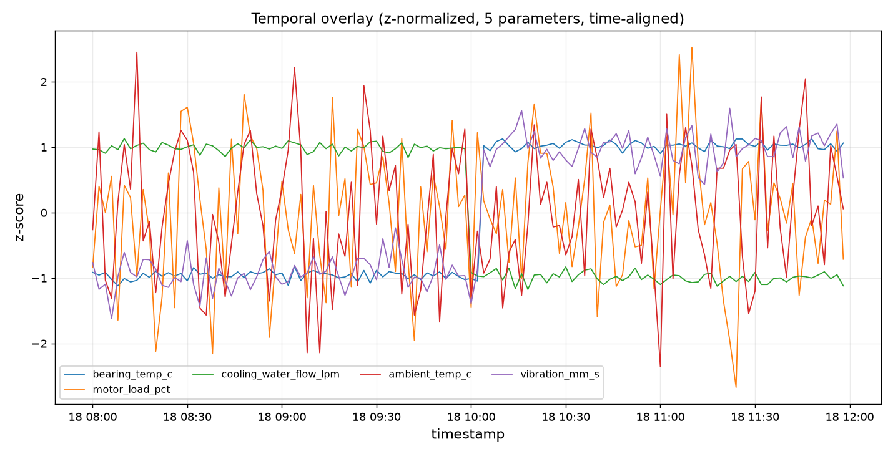
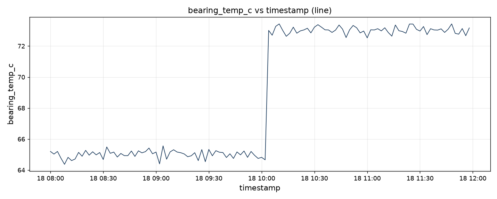

Industrial Deep Diagnostic · Step 8 Visualization
轴承温升根因:冷却水流量阶跃下降,散热能力不足
冷却水流量于 10:00 由 12.0 L/min 阶跃降至 8.0 L/min(−33.2%),轴承温度滞后 2 个采样点于 10:04 由 65.0℃ 阶跃升至 73.0℃(+8.02℃)并保持——冷却能力下降是唯一存活根因(H1)。
DETERMINED
82
置信 /100 · 上限 85 (L3)
⚠ 在线图表库加载失败 — 本页已降级:全部文字结论/要点卡/本地图片证据仍完整可用。
01
结论先行(Hero)
给决策者的一屏就像把水龙头关小,散热器里流过的水变少,热量带不走,温度自然抬上去。
流量台阶在温度台阶之前 2 个采样点出现、方向相反、幅度对应——这是本页最硬的因果证据。
负载和环境温度全程平稳,只有冷却水流量发生了真实的阶跃变化。
流量为什么跌(结垢还是阀故障)需要现场点检确认,页面如实标注这一边界。
诊断类型DETERMINED
Judge 评分91/100 (pass, 第2轮)
综合置信度82/100 (HIGH, 上限 85)
重点对象产线关键风机驱动端轴承(EQ-FAN-01)
样本量120 行 × 6 列 · 2 分钟间隔
异常区段10:00–10:04 (+08:00): 流量台阶 @idx60 → 温度台阶 @idx62(+8.02℃)
数据窗口2026-11-18 08:00–11:58 (+08:00)
证据级L3 统计 + L4 读图 + L5 机理 (结论受 L3 封顶 85)
最强证据
滞后CCF峰值 lag=−2: r=−0.9959(n=118, 一致率1.0);变化点先后 60→62 恰 2 步
已排除因素
H2 环境温度(r=0.0162, p=0.86)、H3 电机负载(r=0.0254, p=0.78)均平稳无变化点, 统计排除(97/100)
建议动作
恢复冷却水流量并在线验证 ≥24h(改善 ≥0.979℃ 视为有效);C 级建议, 先现场点检成因
证据缺口
无冷却水温差/压差与流量设定值数据——结垢 vs 阀故障不可判别
如何读本页: 先看 Hero 结论与四格要点 → 看『流量-温度对齐』图(谁先动、谁后动) → 顺三层证据链(统计Ⅰ→物理Ⅱ→排除Ⅲ)核对每个数字 → 行动建议在第10节, 局限如实标注
02
核心证据图
谁先动、谁后动、谁一起动10:00 流量 12.0→8.0 下台阶;10:04 温度 65→73 上台阶并保持;振动 2.0→2.4 轻升
流量领先温度 2 个采样点, 方向相反、随后保持——因果时序的形态证据
备择假设(负载/环境)无台阶, 无法解释该形态;恢复流量是可证伪的干预检验
五参数时间对齐叠加图 03_figures/fig_adaptive_overlay.png

bearing_temp_c 单列时序 03_figures/fig_adaptive_line_bearing_temp_c.png

03
证据链三层
统计Ⅰ → 物理Ⅱ → 排除Ⅲ, 每层有真实工件支撑Ⅰ 统计层 available=true
- Pearson r=−0.9626 (n=120, p≈0);去趋势 −0.8501 (trend_confounded=false)
- 滞后CCF峰值 lag=−2: r=−0.9959 (n=118);窗口一致率 1.0;补偿器 confidence=high
- Granger flow→temp: F=91.53(lag1)/259.15(lag2), p≈0
- 多重检验: 3组仅 flow→temp 幸存 Bonferroni(0.0167)
来源: 02_processed/validate_report.json · 02_processed/time_lag_analysis.json
Ⅱ 物理层 available=true
- Q=m_water·cp·ΔT: 流量 −33.2% → 散热能力同比例下降(direction=− 与数据一致)
- 能量代理 −19.18% → FOULING_PROGRESSION(与渐进性结垢一致)
- 振动全程 ISO 10816 B区(1.86–2.52 mm/s), 无 cliff —— 伴生症状非根因
- Arrhenius(默认Ea先验): 观测不一致 → 反应动力学非主导机制
来源: 02_processed/physics_check.json · 01_ontology/ontology.json
Ⅲ 排除层 available=true
- H2: r=0.0162/p=0.8608 不显著 + 无变化点 + 形态不符 → 排除(97)
- H3: r=0.0254/p=0.7834 不显著 + detrended −0.0102 + 无变化点 → 排除(97)
- 判别矩阵: H1-H2/H1-H3 均 DISCRIMINABLE, 无 INDISTINGUISHABLE
来源: 04_diagnostics/diagnosis.json · 02_processed/anomaly_report.json
04
排除逻辑
竞争假设法:生成 → 判别 → 排除| 假设 | 机制通道 | 判别证据 | 结论 |
|---|---|---|---|
| H1 冷却水流量下降(CONTAMINATION) | 流量↓ → Q=m·cp·ΔT↓ → 温度↑(方向 −, 滞后~2步) | 方向✓ 时滞✓ 幅值✓ 三要素 MATCH;唯一 abrupt 波动源(cv=0.2001) | 存活 · 置信 82 |
| H2 环境温度升高(ENVIRONMENT) | 散热终温上移(方向 +, 日内缓变) | r=0.0162, p=0.8608 不显著;无变化点;cv=0.0167 平稳;阶跃形态不符 | 排除 (97/100) |
| H3 电机负载升高(OPERATION) | 负载↑ → 发热↑(方向 +) | r=0.0254, p=0.7834 不显著;detrended −0.0102;无变化点;cv=0.0106 平稳 | 排除 (97/100) |
判别矩阵: H1-H2 与 H1-H3 均 DISCRIMINABLE(判别信号=变化点时序+相关显著性);无 INDISTINGUISHABLE 对, 不触发 65 分封顶。传感器漂移被"2 步内中断阶跃+振动共变"形态证据否决。各假设 revival_condition 见 04_diagnostics/diagnosis.json。
05
机制链
每条链可回溯控制方程冷却水流量 12.0→8.0 L/min→带热量 Q=m·cp·ΔT 同比例下降→热平衡点上移→轴承温度 +8.02℃ 保持
控制方程: Q_cool = m_water·c_p·(T_out − T_in) · 机制边 type=physical / direction=− / delayed_response(01_ontology/ontology.json)
伴生 温度↑ → 润滑粘度/游隙变化 → 振动 2.0→2.4 mm/s(ISO 10816 B 区, 无 cliff;伴生症状, 非根因)
独立核验 physics_check 能量代理 444.25→359.04(−19.18%) → FOULING_PROGRESSION(与渐进性结垢一致)
06
改善建议
advisory available=true · 动作 1 条 · 处方 0 条 · 可达上限 BC
冷却水流量 · increase · 10.025 → 11.0125 L/min (Δ0.9875)
预期收益1.9581858375
95%CI [1.840121325, 2.0762493625] · 方法 dose_response · KPI bearing_temp_c
验证bearing_temp_c · 在线连续 ≥24h 对比基线窗 · 改善 ≥ 0.9791(点估计的 50%)视为有效
回滚回退至 10.025(调整前中位), 并复核工况前提
action_id: ACT-cooling_water_flow_lpm-263 · 等级依据: 观察数据最高 B(无设计试验窗/无归因窗), 本动作 C
处方区: 0 条(本轮无 not_actionable 触发项, 无须补冷却水流量归因窗处方——归因数据已在 dose_response 证据腿中估计)。来源: advisory/advisory_actions.json (IMA-20261118195337-279905)
本节为确定性脚本生成的咨询建议(advisory),不构成参数下发;执行须经产线审批 / optimizer-campaign 验证。
07
局限与边界
诚实清单- 数据缺口: 无冷却水进出口温差/压差(结垢直接证据)、无流量独立设定值(区分"设定被改"vs"回路阻力增大")、无润滑油温/振动频谱(伴生链无法定量)。
- 窗口局限: 单一 4 小时窗口、单次事件, 无跨运行重复验证;环境温度日内周期未采样到(置信 −3)。
- 证据级: 结论核心支撑为 L3 统计分析(封顶 85);视觉证据为会话智能体读图(fast mode 无 VLM)。
- 3D 模块: process_flow.recoverable=false(运行数据不含设备拓扑), 依据协议不渲染装饰性 3D。
- 本页与建议均为咨询参考, 不构成参数下发;执行须经产线审批 / optimizer-campaign 验证。